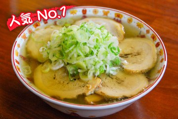

広告（PR）｜ふるさと納税

島根県のラーメン店を市区別に、全7エリア・61店から厳選しました。各エリアの1位には、松江市「ラーメン 長さん」（★4.3）、出雲市「らーめん 福善」（★4.2）、浜田市「らーめん まめマメ食堂」（★4.1）などが並びます。気になるエリアのページから、おすすめ順のランキングをご覧ください。
おうちでラーメンを楽しむ【PR】
宅麺.com｜名店のラーメンをお取り寄せ
全国の有名ラーメン店の味を、冷凍のまま自宅へお届けするお取り寄せサービス。お店の味をそのまま楽しめます。
大阪王将 公式通販｜冷凍餃子・中華
餃子・炒飯・点心など、お店の中華料理をご家庭にお届けする公式通販。ラーメンのお供にもおすすめです。
松江市ラーメン10選
1位：ラーメン 長さん（★4.3／820件）
出雲市ラーメン10選
1位：らーめん 福善（★4.2／472件）
浜田市ラーメン10選
1位：らーめん まめマメ食堂（★4.1／158件）
益田市ラーメン10選
1位：麺家 崇心（★4.3／317件）
安来市ラーメン9選
1位：ラーメン一刻 安来本店（★4.2／723件）
雲南市ラーメン4選
1位：ドンシュー（★4.3／579件）
石見エリア ラーメン8選
1位：八百山（★4.2／265件）
選定基準｜おすすめ順の決め方
島根県全体の順位は、次の方法で決めています。
- 算出方法：Googleマップの評価（★）を主軸に、口コミ件数と食べログの点数・口コミ数を加味した「おすすめ順」です。評価が高く、口コミの母数が多い店ほど上位になります。
- 実測日：掲載している評価・口コミ件数は、2026年11月3日にGoogleマップ・食べログで確認した実測値です。
- 順位と広告の関係：順位は広告・提携の有無とは一切関係ありません。本ページにはアフィリエイト広告（PR）が含まれますが、店舗の順位には影響しません。
おうちでラーメンを楽しむ【PR】
宅麺.com｜名店のラーメンをお取り寄せ
全国の有名ラーメン店の味を、冷凍のまま自宅へお届けするお取り寄せサービス。お店の味をそのまま楽しめます。
大阪王将 公式通販｜冷凍餃子・中華
餃子・炒飯・点心など、お店の中華料理をご家庭にお届けする公式通販。ラーメンのお供にもおすすめです。